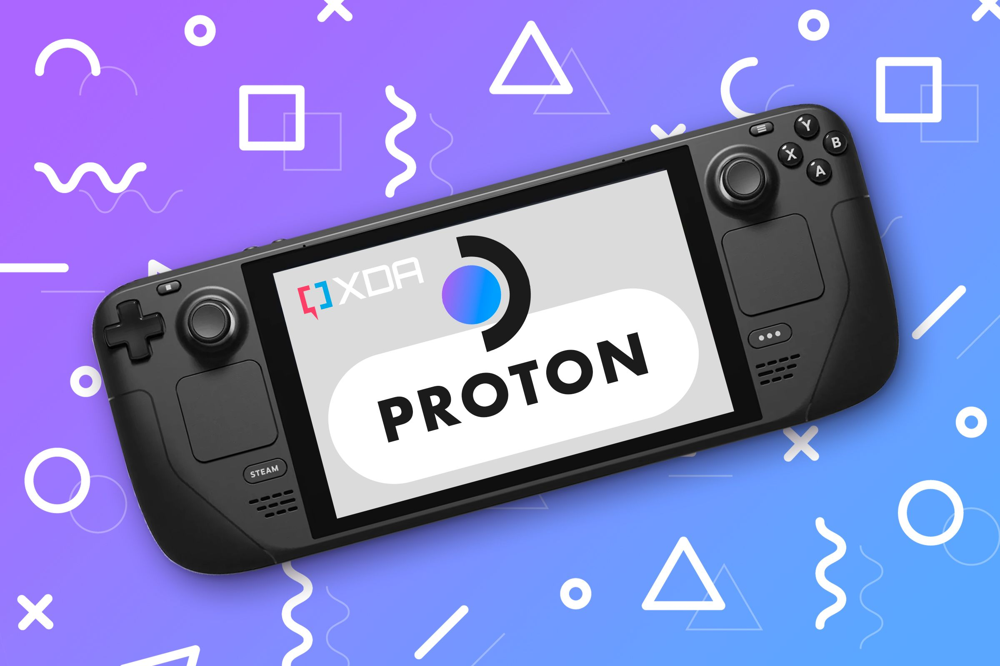
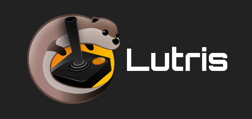

Como jogar jogos facilmente no LINUX ?🐧
Hoje em dia, é muito mais fácil jogar nossos games no Linux do que há alguns anos.
Com a disponibilidade do SteamOS, sistema operacional da Steam, e com as várias versões do Proton que ela oferece,
a vida do jogador no sistema do pinguim nunca foi tão simples!
melhores jeitos para rodar seus jogos no Linux:
1: PROTON

O Proton da Steam é uma ferramenta desenvolvida pela Valve que permite rodar jogos de Windows no Linux.
Ele é baseado no Wine (um software de compatibilidade) e inclui melhorias específicas para jogos,
como suporte a DirectX via Vulkan (através do DXVK e VKD3D), melhor desempenho, e integração com o Steam.
2: Wine
O Wine é um software que permite rodar programas feitos para Windows em sistemas operacionais Unix-like,
como Linux e macOS, sem precisar de emulador ou máquina virtual.
Ele permite executar desde aplicativos simples até jogos mais complexos, embora a compatibilidade varie.
3: Lutris

O Lutris é uma plataforma gratuita e de código aberto feita para facilitar o jogo no Linux,
reunindo vários métodos de execução em uma só interface.
Ele gerencia jogos de diferentes fontes, como:
-
Jogos nativos de Linux
-
Jogos de Windows via Wine
-
Jogos de lojas como GOG e Epic Games Store
-
Steam
-
Emuladores (PS2, PS3, GameCube, etc.)
4: GOG
A GOG (Good Old Games) é uma loja digital de jogos para PC que se destaca por oferecer todos os jogos sem DRM
(ou seja, sem travas de proteção contra cópias).
Isso significa que você realmente possui os jogos que compra — pode baixá-los,
guardar e rodar onde quiser, inclusive no Linux.